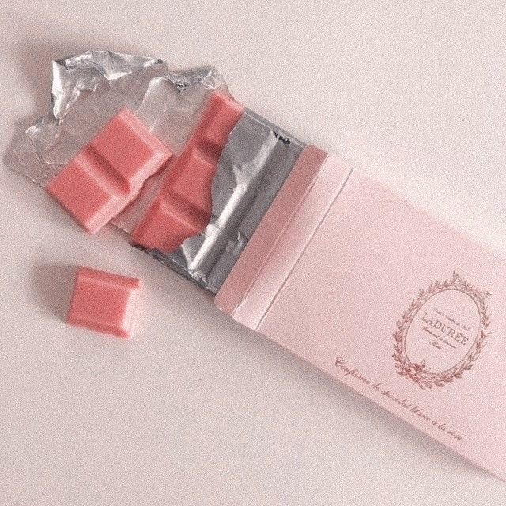
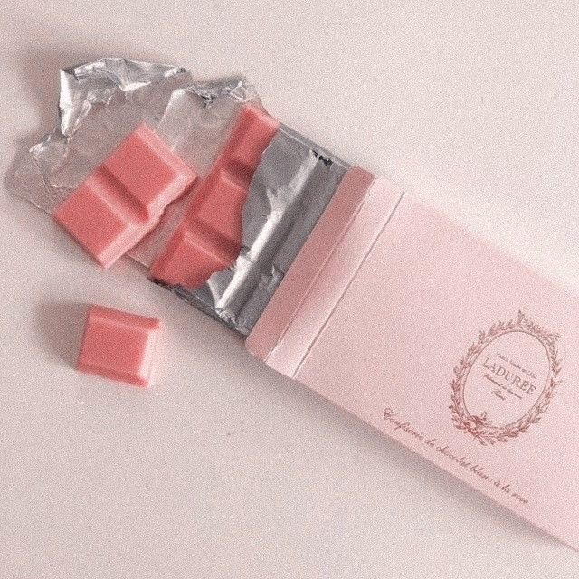

por Paula García
El rosa es un color que tiende a alejar las preocupaciones y que acompaña con suavidad.
También son tonos asociados a la creatividad, a la coquetería
y utilizado con frecuencia por las personas más presumidas, porque se asocia con la belleza y la vanidad.
 

Cosas que las personas aman del color rosa
Pero igual es adorado para...
Si quieres ver un video sobre el rosa te dejamos un link aquí
¿Sabes como combinar este color?
¿qué tipo de rosa te gusta más?